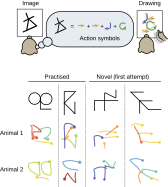

The Goal
Like the heart, lung or any other organ, the brain is an unassuming collection of biological matter. Yet, from this organ comes all our abilities to perceive, act, reason, remember, imagine, and feel—the things that make each of us who we are. The brain is thus a biological machine harboring mechanisms that generate the mind. What are these mechanisms? Answering this question is critical for both understanding our own human nature, and for understanding the root causes of brain disorders.
Our lab’s mission is to tackle this question—how the mind arises from the brain—by studying the neural mechanisms of cognition. We are currently focused on a fundamental aspect of cognition: the ability to learn and generalize by representing the world's abstract, compositional structure and reorganizing that structure to understand unfamiliar situations and solve novel problems.
Research Overview
We routinely solve new problems we’ve never seen before, whether using an unfamiliar tool, generating a sentence to convey a new idea, or parsing a new mathematical expression. How is this possible? From finite experience, we somehow have the potential to understand an unbounded number of novel situations. Our lab seeks the neural and cognitive mechanisms underlying this ability.
Our overarching thesis is that we can solve new problems because the brain can rapidly generate structured novelty through two complementary operations: abstraction and recombination.
Abstraction: Discovering and representing reusable concepts, categories, rules, and relations that capture the hidden compositional structure of experience.
Recombination: Rapidly assembling abstract components into novel structures to solve unfamiliar problems.
We investigate abstraction and recombination across behavior, computation, and neural circuits:
Behavior: We design cognitive-motor tasks that isolate abstraction and recombination in people and animals solving novel problems. For instance, we study drawing tasks that require reproducing an unfamiliar image by recombining learned action concepts (e.g., circle) according to generative grammatical rules (e.g., repeat three times and connect).
Computational modeling: We develop models to ask how cognitive operations can emerge from neural representations and dynamics, using architectures ranging from recurrent network to neuro-symbolic.
Neurophysiology: We use large-scale electrophysiology and causal perturbation to identify where, when, and how these computations occur, across frontal, parietal, and connected areas.
Our long-term goals are to identify the fundamental computations underlying creative intelligence—across abilities like planning, reasoning, and imagination—and to understand how disruption of these computations gives rise to disorders of cognition.

Research Directions
We currently have three main research questions:
-
What are the cognitive algorithms supporting abstraction and recombination, and how are they realized in neural activity? We address this using neural recordings in behaving non-human primates.
-
What are the computational principles linking cognitive algorithms to neural representations and dynamics? We address this using computational modeling of behavior and neural activity.
-
Is there a set of general-purpose mechanisms by which neural circuits implement abstraction and recombination? We address this by comparing mechanisms we identify across tasks and also in humans.